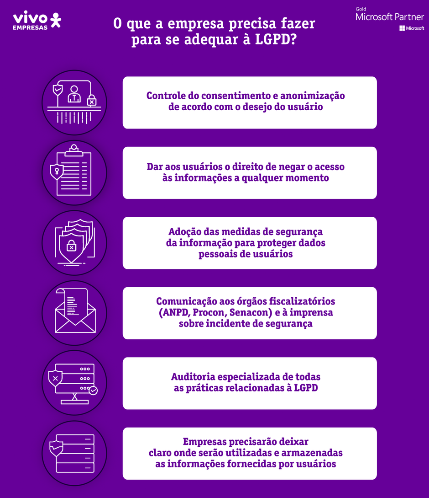

ASPECTOS FUNDAMENTAIS DA LEI GERAL DE PROTEÇÃO DE DADOS
Autor: Carlos Wagner Rodrigues da Silva
Introdução
A Lei Geral de proteção de Dados (LGPD), publicada em
14 de agosto de 2018 e com vigência desde 18 de setembro de 2020,
tem por objetivo proteger os direitos fundamentais, como o direito
à intimidade, privacidade e o livre desenvolvimento da personalidade
da pessoa natural, bem como o direito de acesso igualitário ao ambiente
virtual.
Inspirada no Regulamento Geral de Proteção de Dados da União Europeia,
a LGPD define as hipóteses de uso legítimo de dados pessoais por terceiros
e estabelece os mecanismos de sua proteção.
Com a revolução tecnológica e a sociedade de informações que vivemos
no contexto atual, intimamente ligada à utilização das Tecnologias de
Informação e Comunicações, tais como acesso à internet, telefones móveis,
televisão interativa, entre outros, uma infinidade de informações e dados
dos usuários são extraídos das interações realizadas na web. E tal fato
é comum, uma vez que referidas tecnologias são caracterizadas pela
ampla liberdade de expressão e inclusão de dados pessoais, de forma
que até mesmo os hábitos e preferências do usuário da web podem ser
colecionados pelos fornecedores de bens e serviços.
Ocorre que tal compartilhamento de informações pode trazer sérios riscos ao
vazamento de dados pessoais em caso de fragilidade do sistema ou ataques de
hackers, por exemplo, ou ainda quando os dados pessoais alcançam conotação
de mercadoria, sendo utilizadas para a chamada publicidade comportamental.
O surgimento dessa lei específica sobre proteção dos dados pessoais decorre
das novas necessidades da sociedade digital que exige mais transparência das
relações, considerando a sustentação do modelo atual de negócios onde a
informação passou a ser a principal moeda de troca utilizada pelos usuários
para ter acesso a determinados bens, serviços ou conveniências
A lei dispõe sobre o tratamento de dados pessoais, inclusive nos meios digitais
por pessoa natural ou por pessoa jurídica de direito público ou privado,
destacando-se, em especial, que, a partir das novas regras, os cidadãos
poderão ter acesso a informações de como seus dados são coletados,
processados e armazenados.
Por essas razões, mostrou-se necessário criar uma legislação específica
para a proteção de dados pessoais, visando conferir ao cidadão instrumentos
legais que lhe garantam a privacidade e a proteção contra o abuso da
exploração dos dados pessoais, definindo especificamente quais seriam
as informações pessoais sensíveis à aplicação do regulamento, além
dos aspectos relacionados ao tratamento dos dados e dos arquivos.
Pretende-se, ainda, delimitar as pessoas que estão submetidas a este
regime legal, bem como os instrumentos de controle e penalização pelas
infrações aos direitos pessoais protegidos pela LGPD.
Contexto da Sociedade da Informação.
Com o desenvolvimento social, a informação foi ganhando cada vez mais importância
na sociedade, de modo que, a partir da Revolução Tecnológica no fim do século XX,
essa importância tornou-se bastante significativa culminando em um modelo
econômico baseados em dados e algoritmos. Conforme destacado por Manuel
Castells (2009), em sua obra “Sociedade em Rede”, faz parte da realidade
da sociedade em rede a constante inovação tecnológica, sendo que as adaptações
necessárias a tais inovações passam a seguir o mesmo ritmo acelerado das novidades técnicas.
Sociedade da Informação (Fonte: iStock)
É possível observar que a informação já era notada como um dos ativos de grande
relevância da sociedade até antes mesmo do surgimento da Era Digital. Neste
ponto, é possível citar o taylorismo que tinha como base o investimento no
treinamento, munindo os funcionários com informações relevantes ao processo
produtivo de forma a melhorar a produtividade nas empresas.
Portanto, desde a sociedade industrial, já se reconhecia o potencial da
informação como um fator determinante para a geração de riquezas. O que
não se imaginava é que a sociedade iria modificar tanto as sias relações
em razão deste desenvolvimento tecnológico, potencializando, assim, a
possibilidade de comunicação e interação praticamente de forma imediata e global.
Entretanto, também se observa que, com o advento da Internet e a disseminação
de seu uso, a relações sociais se tornaram mais fluídas e instáveis,
caracterizadas como relações líquidas, impalpáveis e imprevisíveis,
na visão de Bauman (1997).
Tal imprevisibilidade e instabilidade é potencializada nos meios digitais
em razão de atitudes e comportamento de usuários que se sentem livres para
expressar e fazer o que bem entendem, visto que tais ações são, a priori,
menos identificáveis na rede.
Se não bastasse isto, o risco crescente à segurança da informação e a
necessidade de ter um maior padrão de controle para proteção das
informações pessoais depositadas em confiança nas instituições,
passaram a exigir uma regulamentação que pudesse trazer algumas
garantias mínimas para os titulares bem como alguns novos direitos
que permitissem um maior poder de decisão sobre o uso de suas informações
pessoais.
Neste contexto que se apresenta um novo framework legal para a adequação
dos modelos de negócios ao contexto digital da economia, garantindo a
proteção de dados pessoais de forma efetiva e eficaz e com respeito
aos direitos fundamentais previstos na Constituição Federal.
Apontamentos Gerais da LGPD
As novas regras vêm com o objetivo de permitir que a livre iniciativa
possa inovar desde que siga uma cartilha de valores que estejam
condizentes com o respeito aos direitos humanos fundamentais, mas
acima de tudo, que aja com a máxima transparência possível no tocante
ao uso (tratamento) dos dados pessoais.
Assim, a regulamentação traz novos direitos para os titulares e, por
sua vez, obrigações às empresas, como: permitir que o usuário tenha
a possibilidade de acesso ao dado que está sendo tratado, de retificação,
portabilidade dos dados para outra empresa, apagamento até oposição
ao tratamento realizado.
Além disso, exige aplicação de medidas técnicas e administrativas
que garantam a proteção dos dados pessoais, procedimentos de
governança, atualização de políticas e normas e camada de gestão,
já que é preciso nomear uma pessoa que será responsável pela
relação com as autoridades.
As organizações devem estar prontas para cumprir essas
adequações, com um canal apropriado para receber e dar andamento
às solicitações de modo que alcance todos os seus sistemas e
empresas para as quais os dados foram compartilhados.
A LGPD também traz algumas exceções: a lei não se aplica quando o
ratamento dos dados é realizado por uma pessoa física, para fins
exclusivamente particulares e não econômicos, para fins exclusivamente
jornalísticos e artísticos, e para tratamentos realizados para fins
de segurança pública e defesa nacional. Uma outra exceção importante
de se citar é que o dano anonimizado, conforme previsto pelo artigo
5º, não é considerado um dado pessoal. Sendo assim, deixa de estar
passível de proteção conforme a lei.
As sanções administrativas, em caso de infrações das normas da LGPD,
envolvem advertência, com indicação de prazo para adoção de medidas
corretivas; multa simples, de até 2% do faturamento da empresa
(limitada, no total, a R$ 50 milhões por infração); publicização
da infração após devidamente apurada e confirmada a sua ocorrência;
bloqueio dos dados pessoais a que se refere a infração até a
regularização da atividade de tratamento pelo controlador; eliminação
dos dados pessoais a que se refere a infração; suspensão parcial
ou total do funcionamento do banco de dados a que se refere a
nfração pelo período máximo de 6 meses, suspensão, proibição parcial
ou total do exercício da atividade de tratamento dos dados pessoais.
Conceitos Importantes da LGPD
A Lei Geral de Proteção de Dados discute alguns conceitos que são
importantes para a definição de seu alcance e merecem ser apresentados
para melhor delimitar as o âmbito de aplicação do referido normativo.
A primeira questão está relacionada a noção do que são dados pessoais.
A lei define “dado pessoal” como informação relacionada a pessoa natural
identifica ou identificável” (art. 5º, I). Também define como “dado
pessoal sensível” aquele sobre origem racial ou étnica, convicção
religiosa, opinião política, filiação sindicato ou organização de
caráter religioso, filosófico ou político, dado referente à saúde
ou à vida sexual, dados genético ou biométrico, quando vinculado a
uma pessoa natural (art. 5º, II).
Considera, ainda, a lei como não identificável, ou “anonimizado”,
os dados relativos à titular que não possa ser identificado,
considerando a utilização de meios técnicos razoáveis e disponíveis
na ocasião de seu tratamento (art. 5º, III). Se contrapõe a esta
definição os dados identificadores, tais como um endereço IP, pois
através deste é possível de identificar, ao menos indiretamente, uma
pessoa física.
Segurança de Dados (Fonte:WeLiveSecurity)
Outra questão importante a ser avaliada é a noção de tratamento, que é
definida pela lei como “toda operação realizada com dados pessoais, como
as que se referem a coleta, produção, recepção, classificação, utilização,
acesso, reprodução, transmissão, processamento, arquivamento, armazenamento,
eliminação, avaliação ou controle da informação, modificação, transferência,
difusão ou extração.” (art. 5ª, X). Estão excluídos do regime de proteção
de dados pessoais o tratamento de dados realizado por pessoa natural para
fins exclusivamente particulares e não econômicos e os tratamentos
realizados para fins exclusivamente jornalísticos, artísticos e acadêmicos.
Já as atividades de segurança pública, defesa nacional, segurança do Estado
ou investigação e repressão de infrações penais serão ser regidos por
legislação específica que deverá observar o princípio da necessidade e
proporcionalidade no trato dos dados, além do devido processo legal e a
proteção e os direitos do titular previstos na lei 13.709/18.
Adequação à LGPD
Ante a previsão ampla dos direitos dos usuários prevista na Lei Geral de
Proteção de Dados, torna-se necessária para as empresas adotarem medidas
de controles e notificações, como utilizar segurança apropriada para
proteger dados pessoais, notificar sobre violações dos mesmos, manter
registro detalhado do processamento de dados, bem como a necessidade
contínua de Compliance (implementação e manutenção das boas práticas
de privacidade e proteção de dados para se manter em conformidade com
a LGPD e demais regulações sobre privacidade).
As obrigações da adoção de políticas transparentes por parte das organizações
são, dentre outras, o fornecimento de aviso claro de coleta de dados,
a informação do propósito do processamento de dados e a definição de
políticas de retenção e exclusão de dados, deixando claro o motivo da
retenção e quando os dados serão excluídos.
Ademais, no contexto de adequação à LGPD é interessante que as empresas
adotem programas de governança em privacidade, seguindo os parâmetros
expostos no art. 50 da Lei.
Outra prática que deve ser adotada é a flexibilidade dada ao usuário,
que tem a liberdade de concordar ou não com o fornecimento de seus dados
pessoais e gerenciar suas escolhas de privacidade, preferencialmente
por meio de painéis de controle (dashboards) ou ferramentas similares.
Não é recomendado, portanto, deixar as checkboxes pré-marcadas,
tampouco coletar dados excessivos ou desnecessários.

O que a empresa precisa fazer para se adequar à LGPD? (Foto: FF)
Por fim, é importante que a empresa esteja sempre disponível, o que
é viável por meio de um canal de atendimento e de comunicação para
que os usuários entrem em contato de maneira fácil e simplificada
para tirar dúvidas sobre o tratamento de dados pessoais
Conclusão
A LGPD traz um grande impacto social e econômico, especialmente sobre
sistema da pequena empresa e startups. isto porque traz exigências
que aumentam os custos empresariais e passam a ter que entrar na
prioridade tanto dos gestores, como do corpo técnico responsável
pela governança corporativa (TI, Segurança de Informação, Gestão
de Dados). Destaca-se que para os profissionais técnicos, tais
exigências, que não eram tão comuns neste ambiente, podem dificultar
(burocratizar) suas atividades, exigindo destes o alinhamento
entre os aspectos técnicos e legais das aplicações dos ambientes
tecnológicos.
Além disto, a conformidade à proteção de dados é o tipo de projeto
contínuo, que exige constante acompanhamento acerca dos entendimentos
que envolvem os direitos assegurados pela Lei, visto que os negócios
estão também em transformação, assim como a tecnologia, trazendo
inovação e novas funcionalidades. Sendo assim, o que é feito hoje
sofrerá alterações em curto espaço de tempo e os procedimentos bem
como a documentação sobre proteção de dados pessoais, precisará de
atualização em intervalos reduzidos, especialmente no tocante às
políticas de privacidade, termos de uso e contratos. Sem contar
também que o cidadão, instruído através da informação e campanhas
educativas, se apoderará, cada mais, dos direitos assegurados por
tal Lei, exigindo o estudo e o investimento para que garantir a
sustentabilidade do modelo trazido pelo novo Marco Legal.
Logo, ter a lei é apenas o começo de uma longa jornada que teremos
que atravessar tanto no âmbito público como privado. Atender aos
requisitos da nova lei exige investimento, atualização de
ferramentas de segurança de dados, revisão documental, melhoria
de processos e, acima de tudo, mudança de cultura que tenha como
foco mostrar aos gestores, profissionais das áreas de compliance,
jurídico, analytics, ciência de dados, tecnologia da informação,
segurança da informação, negócios e marketing, a importância de
estarmos alinhados com o contexto de Transformação Digital,
garantindo a liberdade dos cidadãos na Sociedade da Informação,
tendo como base a transparências nas instituições..
Confira o texto oficial na íntegra
Referências
BAUMAN, Zygmunt. O mal-estar da pós-modernidade. Rio de Janeiro: Zahar, 1997.